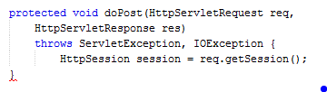

Session Handling
A session can be defined as the communication between two people. In web application session is the communication between the users and the servers in the form of the request and respond. It is a sequence of network HTTP request transaction associated with one user.
Sessions is a way of storing data for individual users contrary to a unique session ID. You can also invalidate the session by calling the session.invalidate() method.Many of us now uses internet and visits websites. According to Internet World Stats over 7,634,758,428 population of the world 4,156,932,140 uses internet as of December 2017 and it is possible that there will be a traffic in accessing the site if many users will access one website at the same time. And to handle that situation Web Servers uses Session Handling to handle every request of the users.
HTTP Session
are used for managing sessions. Sessions was determined by a specific and unique ID stored in a cookies given by the server to a specific user. When a new user visits a site he/she was given an ID to determine his/her unique session it was obtained via request.getSession() method. A HTTPSession works out until it reach its timeout.
This is how to create a HTTPSession object.(See the figure below)
Methods of HttpSession
- public void setAttribute(String name, Object value): can be used in storing user information into the session objects and can also used in fetching information into a session.
- public Object getAttribute(String name):Returns null if no object was found in the specific attribute. String object specified in the parameter, from the session object
- public Enumeration getAttributeNames(): Returns an Enumeration that contains the name of all the objects that are bound as attributes to the session object.
- public void removeAttribute(String name): Given attribute from session can be removed.
- setMaxInactiveInterval(int interval): Sets the time of activeness of the session after the last request received from the client.
Session ID
- Embedded
- Hidden from fields
- Cookie Based